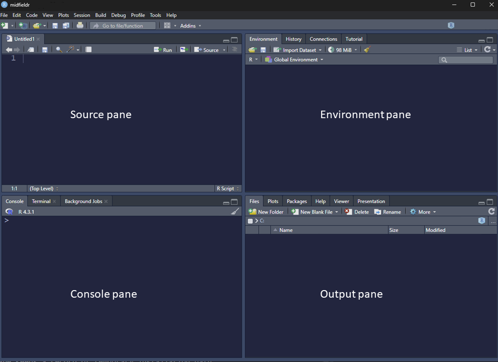
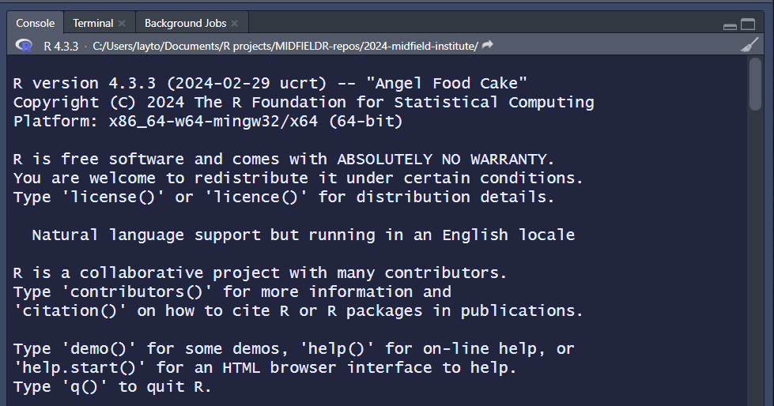
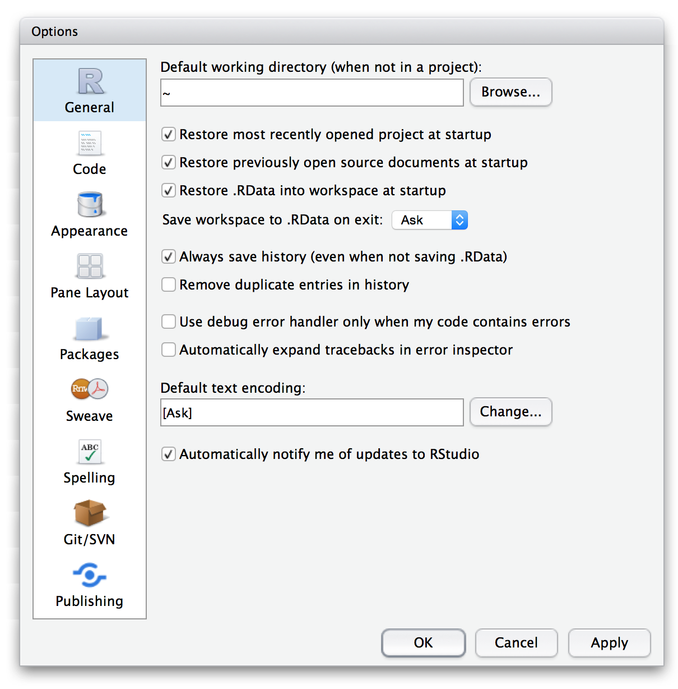
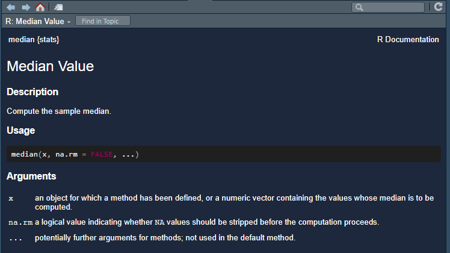
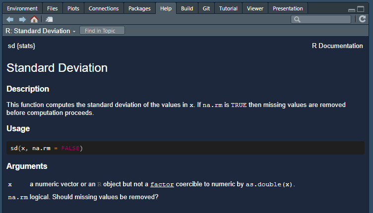
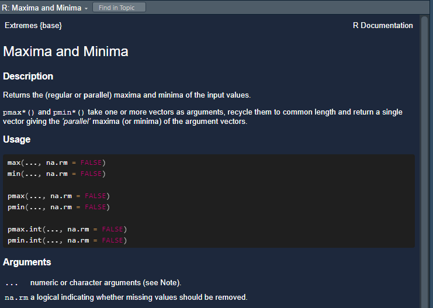
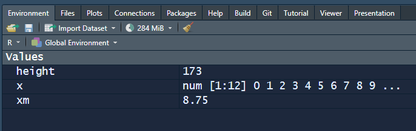
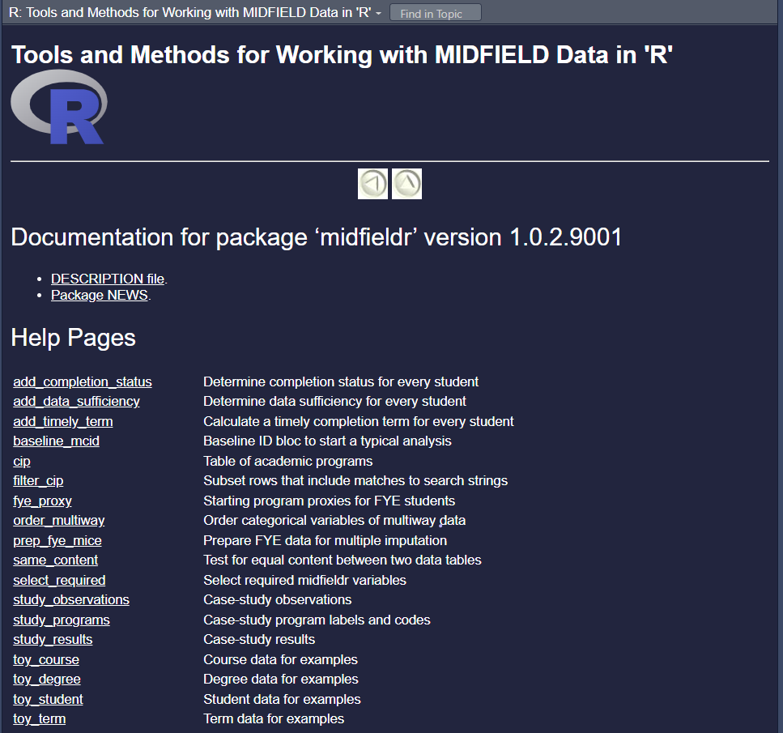

# keyword search
apropos("mean")
#> [1] ".colMeans" ".rowMeans" "colMeans" "kmeans"
#> [5] "mean" "mean.Date" "mean.default" "mean.difftime"
#> [9] "mean.POSIXct" "mean.POSIXlt" "rowMeans" "weighted.mean"R basics

An introduction to key concepts in R.
License. This material is adapted from Getting started in R: Tinyverse edition by Bashir and Eddelbuettel (2018) which was licensed under CC BY-SA by ilustat. This adaptation and extension, R basics by Richard Layton, is licensed under CC BY-SA 2.0.
Preface
This guide gives you a flavor of what R can do for you. To get the most out of this guide, do the examples and exercises as you read along.
Experiment safely. Be brave and experiment with commands and options as it is an essential part of the learning process. Things can and will go “wrong”, like getting error messages or deleting things that you create. You can recover from most situations using “undo” ctrl Z (MacOS cmd Z) or restarting R with the RStudio menu Session > Restart R.
Before starting. Our tutorials assume that you
- Have completed the Before you arrive instructions
- Start your R session by launching the RStudio project you created, e.g.,
midfield-institute-2024.Rproj
If you are in an RStudio project, the project name appears in the upper left corner of the RStudio window. Your project directory (folder) should look something like this:
midfield-institute-2024\
data\
results\
scripts\
midfield-institute-2024.RprojGetting started
Starting R & RStudio. R starts automatically when you open RStudio with a screen similar to Figure 1.
- Source: view and edit files, e.g., R scripts
- Console: run lines of code interactively
- Environment: display currently saved R objects
- Output: files, plots, packages, help

The console starts with information about the version number, license and contributors. The last line is a prompt (>) that indicates R is ready to do something.

Quitting R & RStudio. When you quit RStudio you will be asked whether to Save workspace? with a yes or no option. If you choose Yes, your current workspace is restored the next time you open RStudio. But as long as you save your script, saving the workspace is unnecessary. I recommend you choose No.
To set No as the default option, from the RStudio menu select Tools > Global Options.
- Un-check the box Restore .RData into workspace at startup
- Set Save workspace to .RData on exit: to “Never”

R help
R’s built-in help system is an essential part of finding solutions to your R programming problems.
help() function. From the R Console you can use the help() function or ?. For example, try the following two commands (which give the same result):
# view the function help page
help(mean)
? meanIf you are asking for the package help page (assuming you have installed the package), type in the Console,
# view a package help page
help(package = "midfieldr")Keyword search. To do a keyword search use the function apropos() with the keyword in double quotes (“keyword”) or single quote (‘keyword’). For example:
The lines of R output are labeled—here with [1], [5] , and [9]. These labels indicate the index or position of the first element in that line within the overall output (here, of length 12). Thus in this output vector, ".colMeans" has index 1, "mean" has index 5, and "mean.POSIXct" has index 9.
Help examples. Use the example() function to run the examples at the end of the help for a function:
# run the examples at the end of the help page
example(mean)
#>
#> mean> x <- c(0:10, 50)
#>
#> mean> xm <- mean(x)
#>
#> mean> c(xm, mean(x, trim = 0.10))
#> [1] 8.75 5.50Here, the output of the mean() example has length 2 (8.75 5.50). The label [1] indicates that the number 8.75 has index 1.
RStudio help. Rstudio provides search box in the Help tab in the Output pane to make your life easier (see Figure 1).
Online help. When you search online use [r] in your search terms, for example, “[r] linear regression”. Because we use data.table for data manipulation, I further recommend that you include data.table as a keyword, e.g., “[r][data.table] group and summarize”.
There is nearly always more than one solution to your problem—investigate the different options and try to use one whose arguments and logic you can follow. Limiting your browser’s search to the past year can sometimes eliminate out-of-date solutions.
Try the following.
help(median)? sd? max
The following help pages should appear in the RStudio Help pane.



Warning. If an R command is not complete then R will show a plus sign (+) prompt on second and subsequent lines until the command syntax is correct.
+ Press the escape key (ESC) to break out.
Hint. To recall a previous command, put your cursor in the Console and use the up arrow key (↑). To go between previously typed commands use the up and down arrow (↓) keys. To modify or correct a command use the left (←) and right arrow (→) keys.
R scripts
Creating a script I recommend that you write your lines of code in a script. Scripts can saved, edited, and run again and again.
- Use File > New File > R Script to create a new R script
- File > Save As… to name the file (I suggest
01-r-basics.R), then save it to thescriptsdirectory - At the top of the script, add a minimal header, something like:
# R basics
# your name
# date The hash symbol # denotes a comment in R, that is, a line that isn’t run. Comments are annotations to make the source code easier for humans to understand but are ignored by R.
Next,
- Use
library()to load packages used in the script.
# packages
library("midfieldr")Note: In a code chunk like the one above, you can click on the “Copy to clipboard” icon in the upper right corner to enable quick copy and paste from this document to your script.
Running a script
- Run the script by clicking the Source button. Some participants report that this does not always work. The workaround is to:
- Select the lines you want to run then ctrl Enter (MacOS cmd Return). Use the keyboard shortcuts ctrl A (MacOS cmd A) to select all lines. (See the appendices for a table of useful keyboard shortcuts.)
If you see an error like this one,
Error in library("midfieldr"): there is no package called 'midfieldr'then you should install the missing package(s) and run the script again. You can review how to install a package here.
Use your script throughout the tutorial. When a new chunk of code is given,
- Copy the line(s) of code into your script, save, and run.
- Check your result by comparing it to the result in the tutorial.
- Check what you’ve learned using the Your turn exercises.
R concepts
In R speak, scalars, vectors, variables and datasets are called objects. To create objects (things) we use the assignment operator (<-).
For example, the object height is assigned a value of 173 as follows,
# assign a value to a named object
height <- 173Typing the name alone prints out its value,
# view
height
#> [1] 173In these notes, everything that comes back to us in the Console as the result of running a script is shown prefaced by #>.
Objects in your R project workspace are listed in the RStudio Environment pane. At this point, we have three objects in the environment.

Warning: R is case sensitive. age and AgE are different:
# illustrating case-sensitivity
age <- 10
AgE <- 50# display result
age
#> [1] 10
AgE
#> [1] 50New lines. R commands are usually separated by a new line but they can also be separated by a semicolon (not recommended).
# recommended style
name <- "Leo"
age <- 25
city <- "Lisbon"
# views
name
#> [1] "Leo"
age
#> [1] 25
city
#> [1] "Lisbon"
# style not recommended
name <- "Leo"; age <- 25; city <- "Lisbon"
# view
name; age; city
#> [1] "Leo"
#> [1] 25
#> [1] "Lisbon"Comments. It is useful to put comments in your script—especially useful to the future you looking back at your script after several months.
R comments start with a hash sign (#). Everything after the hash to the end of the line is ignored by R.
# This comment line is ignored when run.
city # text after "#" is ignored.
#> [1] "Lisbon"R as a calculator
You can use R as a calculator by typing in the Console. Try the following:
# type in the console
2 + 3
#> [1] 5
(5 * 11) / 4 - 7
#> [1] 6.75
7^3 # exponent
#> [1] 343Other math functions. You can also use standard mathematical functions that are typically found on a scientific calculator.
- trigonometric:
sin(),cos(),tan(), etc. - rounding:
abs(),ceiling(),floor(),round(),sign(),signif(),trunc() - logarithms and exponentials:
log(),log10(),log2(),exp()
# type in the console
# square root
sqrt(2)
#> [1] 1.414214
# round down to nearest integer
floor(8.6178)
#> [1] 8
# round to 2 decimal places
round(8.6178, 2)
#> [1] 8.62What do the following pairs of examples do?
ceiling(18.33); signif(9488, 2)exp(1); log10(1000)sign(-2.9); sign(32)abs(-27.9); abs(11.9)
- 19 and 9500
- 2.718 and 3
- -1 and 1
- 27.9 and 11.9
More R concepts
From this point, please type the R code chunks in your script, save and run, and compare your results to those shown.
You can do some useful things using the assignment operator (<-), for example,
# assign dimensions
room_length <- 7.8
room_width <- 6.4
# compute area
room_area <- room_length * room_width
# view
room_area
#> [1] 49.92On coding style. Summary of commonly used coding styles for naming objects in R include:
| style | example |
|---|---|
| snake case | room_area |
| camel case | roomArea |
| Pascal case | RoomArea |
We use snake case, that is, lowercase letters and numbers with words separated by underscores. You may of course use any style you are comfortable with.
Text objects. You can assign text to an object.
# assign text to an object
greeting <- "Hello world!"
# view
greeting
#> [1] "Hello world!"Vectors. The objects presented so far have been scalars (single values). Working with vectors is where R shines best as they are the basic building blocks of datasets.
We can create a vector using the c() (combine values into a vector) function.
# a numeric vector
x1 <- c(26, 10, 4, 7, 41, 19)
# view
x1
#> [1] 26 10 4 7 41 19
# a character vector
x2 <- c("Peru", "Italy", "Cuba", "Ghana")
# view
x2
#> [1] "Peru" "Italy" "Cuba" "Ghana"There are many other ways to create vectors, for example, rep() (replicate elements) and seq() (create sequences):
# repeat vector (2, 6, 7, 4) three times
r1 <- rep(c(2, 6, 7, 4), times = 3)
# view
r1
#> [1] 2 6 7 4 2 6 7 4 2 6 7 4
# vector from -2 to 3 incremented by 0.5
s1 <- seq(from = -2, to = 3, by = 0.5)
# view
s1
#> [1] -2.0 -1.5 -1.0 -0.5 0.0 0.5 1.0 1.5 2.0 2.5 3.0Vector operations. You can do calculations on vectors, for example using x1 from above:
# multiply every element by 2
x1 * 2
#> [1] 52 20 8 14 82 38
# parentheses set the order of operations, working inside out
round(sqrt(x1 * 2.6), 2)
#> [1] 8.22 5.10 3.22 4.27 10.32 7.03Missing values. Missing values are coded as NA in R. For example,
# numeric vector with a missing value
x2 <- c(3, -7, NA, 5, 1, 1)
# view
x2
#> [1] 3 -7 NA 5 1 1
# character vector with a missing value
x3 <- c("rat", NA, "mouse", "hamster")
# view
x3
#> [1] "rat" NA "mouse" "hamster"Managing objects. Use function ls() to list the objects in your workspace. The rm() function deletes them.
# view objects in workspace
ls()
#> [1] "age" "AgE" "city" "greeting" "height"
#> [6] "name" "r1" "room_area" "room_length" "room_width"
#> [11] "s1" "x" "x1" "x2" "x3"
#> [16] "xm"
# remove objects
rm(x1, x2, x3, r1, s1, AgE, age)
# view result
ls()
#> [1] "city" "greeting" "height" "name" "room_area"
#> [6] "room_length" "room_width" "x" "xm"Add the tax to the net amount and round to the nearest integer.
net <- c(108.99, 291.42, 16.28, 62.29, 31.77)
tax <- c(22.89, 17.49, 0.98, 13.08, 6.67)#> [1] 132 309 17 75 38R functions and packages
R functions. We have already used some R functions (e.g. c(), mean(), rep(), sqrt(), round()). Most computation in R involves functions.
A function essentially has a name and a list of arguments separated by commas. For example:
# closer look at function arguments
seq(from = 5, to = 8, by = 0.4)
#> [1] 5.0 5.4 5.8 6.2 6.6 7.0 7.4 7.8- the function name is
seq - the function has three arguments
from(the start value),to(the end value), andby(the increment between values) - arguments are assigned values (using
=) within the parentheses and are separated by commas
The seq() function has other arguments, documented in the help page. For example, we could use the argument length.out (instead of by) to fix the length of the sequence as follows:
# replacing `by` with `length.out`
seq(from = 5, to = 8, length.out = 16)
#> [1] 5.0 5.2 5.4 5.6 5.8 6.0 6.2 6.4 6.6 6.8 7.0 7.2 7.4 7.6 7.8 8.0Custom functions. As you gain familiarity with R, you may want to learn how to construct your own custom functions, but that’s not an objective of our “basics” tutorials.
R packages. The basic R installation comes with over 2000 functions, but R can be extended further using contributed packages. Packages are like “apps” for R, containing functions, data, and documentation.
To see a list of functions and data sets bundled in a package, use the ls() function, e,g,
ls("package:midfieldr")
#> [1] "add_completion_status" "add_data_sufficiency" "add_timely_term"
#> [4] "baseline_mcid" "cip" "filter_cip"
#> [7] "fye_proxy" "order_multiway" "prep_fye_mice"
#> [10] "same_content" "select_required" "study_observations"
#> [13] "study_programs" "study_results" "toy_course"
#> [16] "toy_degree" "toy_student" "toy_term"Alternatively, in RStudio select the Packages tab and in its menu bar type the package name in the search box. In the pane, click on the package name. A help page opens listing all the functions and names of data sets in the package, e.g.,

In MIDFIELD work, we use a small number of R packages:
- midfieldr for tools to study student unit records
- midfielddata for practice data
- data.table for manipulating data
- ggplot2 for charts
About R objects
Everything in R has class.
class(room_area) # assigned earlier
#> [1] "numeric"
class(greeting) # assigned earlier
#> [1] "character"
class(seq) # R function
#> [1] "function"Certain actions will change the class of an object. Suppose we create a vector from the room_area and greeting objects.
x <- c(room_area, greeting)
x
#> [1] "49.92" "Hello world!"
class(x)
#> [1] "character"By concatenating a number and a character string, R changed the class of room area from “numeric” to “character” because all elements of a vector must have the same class.
Data frames. The most common class of data object we will use is the data frame: a two-dimensional array of rows and columns in R. All values in a column are of the same type (numerical, character, logical, etc.) but columns can be of different types.
For example, the data frame study_results that is bundled with midfieldr has three character columns and three numerical columns.
# a data frame bundled with midfieldr
study_results
#> program sex race ever_enrolled graduates stickiness
#> <char> <char> <char> <int> <int> <num>
#> 1: CE Female Asian 15 10 66.7
#> 2: CE Female Black 4 1 25.0
#> 3: CE Female International 23 13 56.5
#> 4: CE Female Latine 13 6 46.2
#> 5: CE Female Native American 1 1 100.0
#> 6: CE Female Other/Unknown 5 3 60.0
#> 7: CE Female White 263 162 61.6
#> 8: CE Male Asian 30 25 83.3
#> 9: CE Male Black 8 5 62.5
#> 10: CE Male International 97 55 56.7
#> 11: CE Male Latine 66 31 47.0
#> 12: CE Male Native American 3 1 33.3
#> 13: CE Male Other/Unknown 27 11 40.7
#> 14: CE Male White 949 612 64.5
#> 15: EE Female Asian 21 12 57.1
#> 16: EE Female Black 6 3 50.0
#> 17: EE Female International 28 9 32.1
#> 18: EE Female Latine 8 3 37.5
#> 19: EE Female Native American 1 0 0.0
#> 20: EE Female Other/Unknown 7 3 42.9
#> 21: EE Female White 118 56 47.5
#> 22: EE Male Asian 123 71 57.7
#> 23: EE Male Black 29 17 58.6
#> 24: EE Male International 195 90 46.2
#> 25: EE Male Latine 45 17 37.8
#> 26: EE Male Native American 3 0 0.0
#> 27: EE Male Other/Unknown 42 16 38.1
#> 28: EE Male White 864 439 50.8
#> 29: ISE Female Asian 15 10 66.7
#> 30: ISE Female Black 7 6 85.7
#> 31: ISE Female International 6 2 33.3
#> 32: ISE Female White 77 54 70.1
#> 33: ISE Male Asian 24 14 58.3
#> 34: ISE Male Black 9 6 66.7
#> 35: ISE Male International 22 12 54.5
#> 36: ISE Male Latine 6 4 66.7
#> 37: ISE Male White 187 130 69.5
#> 38: ME Female Asian 7 1 14.3
#> 39: ME Female Black 3 2 66.7
#> 40: ME Female International 19 11 57.9
#> 41: ME Female Latine 12 8 66.7
#> 42: ME Female Other/Unknown 8 4 50.0
#> 43: ME Female White 213 134 62.9
#> 44: ME Male Asian 76 49 64.5
#> 45: ME Male Black 30 19 63.3
#> 46: ME Male International 178 89 50.0
#> 47: ME Male Latine 79 42 53.2
#> 48: ME Male Native American 5 1 20.0
#> 49: ME Male Other/Unknown 80 41 51.2
#> 50: ME Male White 1596 953 59.7
#> program sex race ever_enrolled graduates stickiness
class(study_results)
#> [1] "data.table" "data.frame"The class() function reveals that this data.frame object is also a data.table object, which is an enhanced version of R’s standard data frame.
For the following midfieldr objects, determine:
- the class of
add_timely_term - the class of
toy_student - the names of the variables in
toy_term
- function
- data.table, data.frame
- mcid, institution, term, cip6, level
Everything in R has structure
str(room_area) # assigned earlier
#> num 49.9
str(greeting) # assigned earlier
#> chr "Hello world!"
str(seq) # R function
#> function (...)
str(study_results)
#> Classes 'data.table' and 'data.frame': 50 obs. of 6 variables:
#> $ program : chr "CE" "CE" "CE" "CE" ...
#> $ sex : chr "Female" "Female" "Female" "Female" ...
#> $ race : chr "Asian" "Black" "International" "Latine" ...
#> $ ever_enrolled: int 15 4 23 13 1 5 263 30 8 97 ...
#> $ graduates : int 10 1 13 6 1 3 162 25 5 55 ...
#> $ stickiness : num 66.7 25 56.5 46.2 100 60 61.6 83.3 62.5 56.7 ...
#> - attr(*, ".internal.selfref")=<externalptr>Use str() to determine
add_timely_termargumentstoy_studentdimensionsstudy_resultsnumerical variables
- The
str()function prints out the arguments and their default values within the parentheses:
str(add_timely_term)
#> function (dframe, midfield_term = term, ..., span = NULL, sched_span = NULL)- 99 rows and 4 columns
- 3 variables: ever_enrolled, graduates, stickiness
Keyboard shortcuts
If you are working in RStudio, you can see the menu of keyboard shortcuts using the menu Tools > Keyboard Shortcuts Help.
The shortcuts we use regularly include
| Windows / Linux | Action | Mac OS |
|---|---|---|
ctrl shift K |
Compile R Markdown document | cmd shift K |
ctrl L |
Clear the RStudio Console | ctrl L |
ctrl shift C |
Comment/uncomment line(s) | cmd shift C |
ctrl X, C, V |
Cut, copy, paste | cmd X, C, V |
ctrl F |
Find in text | cmd F |
ctrl I |
Indent or re-indent lines od code | cmd I |
alt – |
Insert the assignment operator <- |
option – |
ctrl alt B |
Run from begining to line | cmd option B |
ctrl alt E |
Run from line to end | cmd option E |
ctrl Enter |
Run selected line(s) | cmd Return |
ctrl S |
Save | cmd S |
ctrl A |
Select all text | cmd A |
ctrl Z |
Undo | cmd Z |
References
Bashir, S., & Eddelbuettel, D. (2018). Getting started in R: Tinyverse edition. https://eddelbuettel.github.io/gsir-te/Getting-Started-in-R.pdf